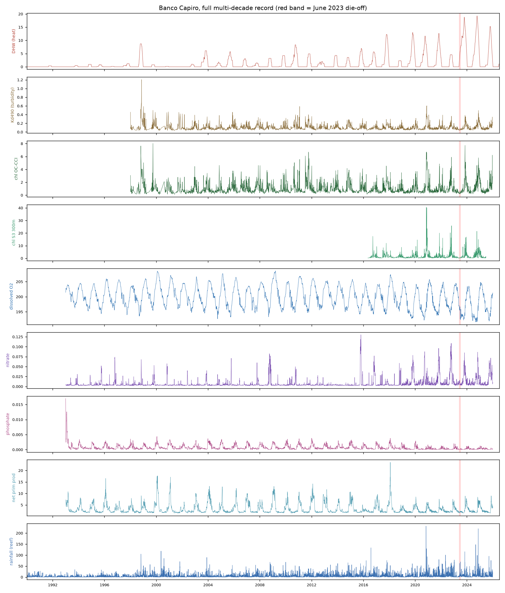
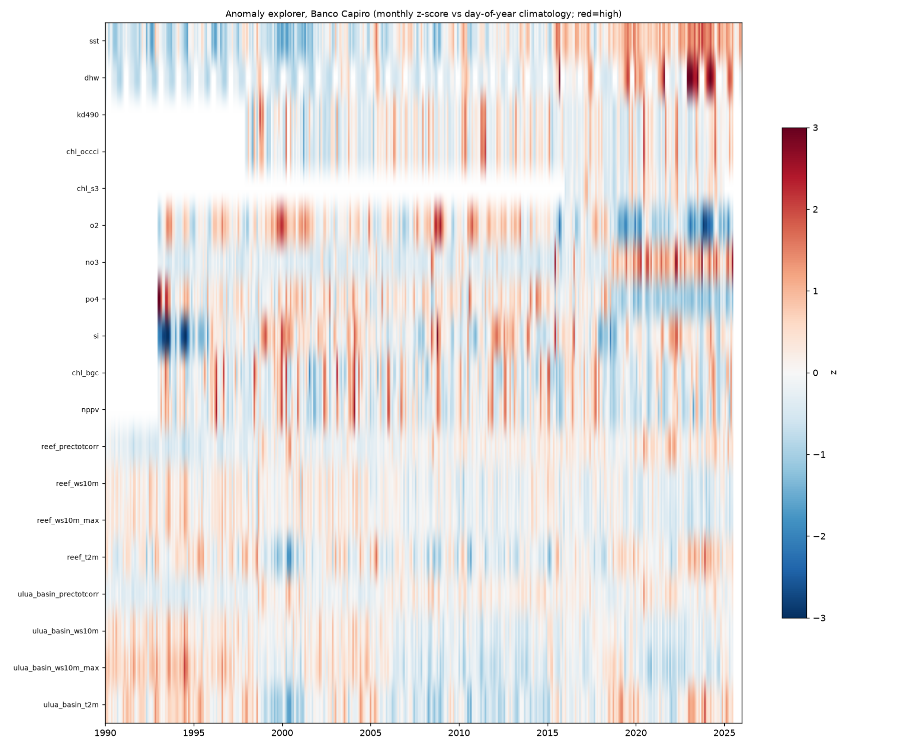
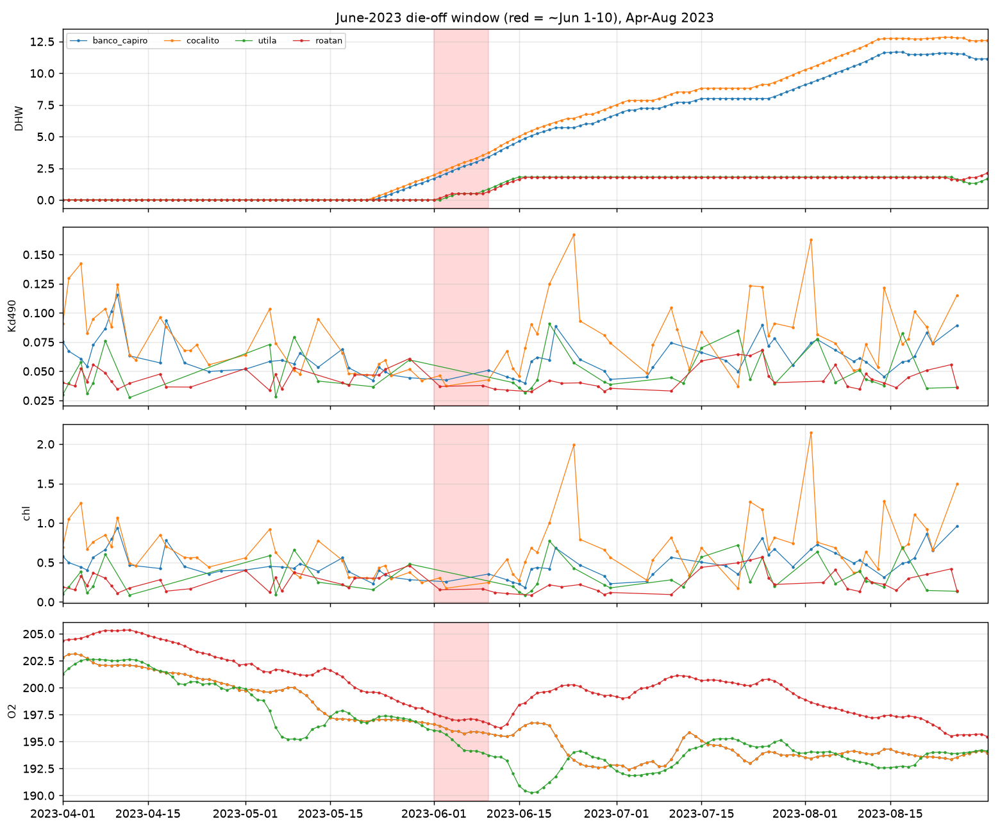
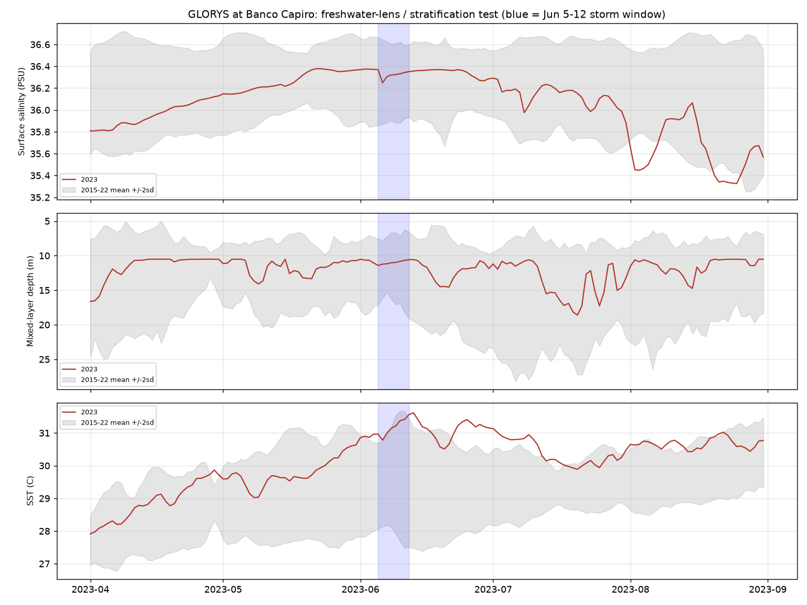
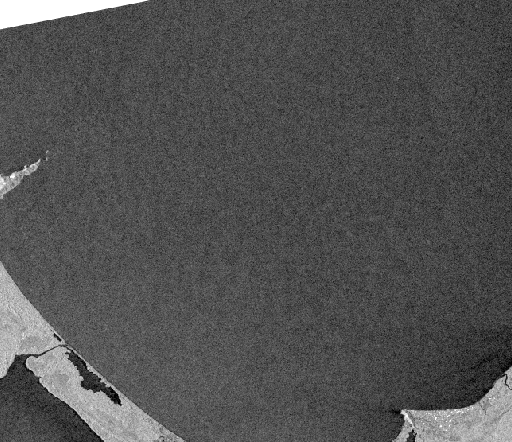
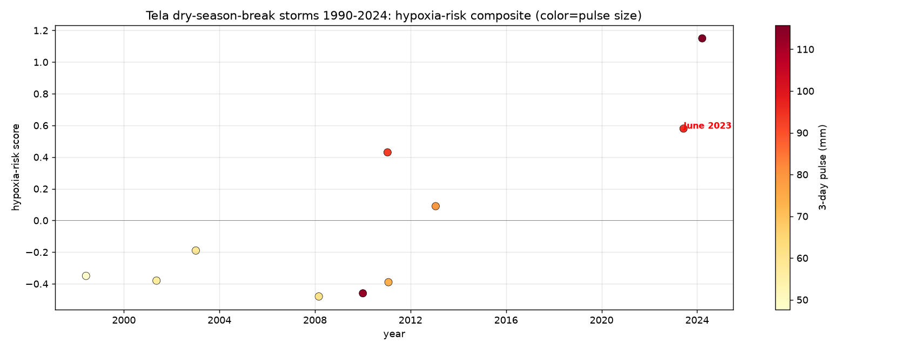
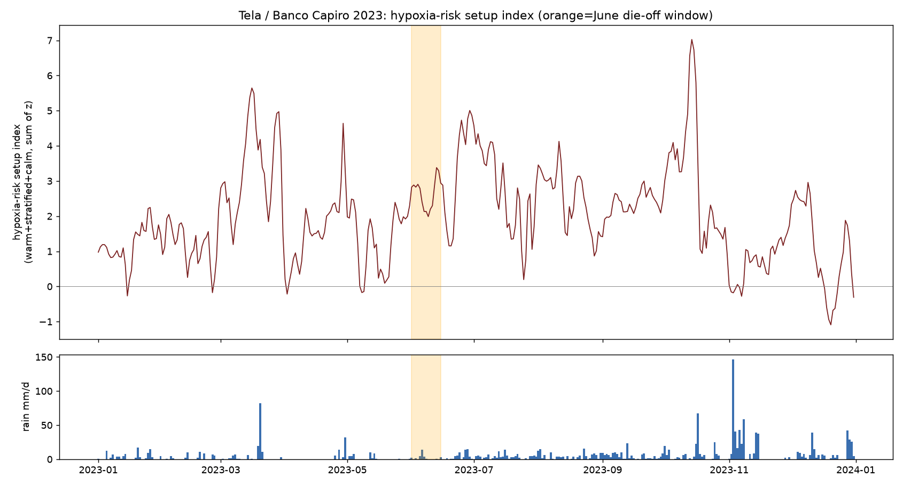
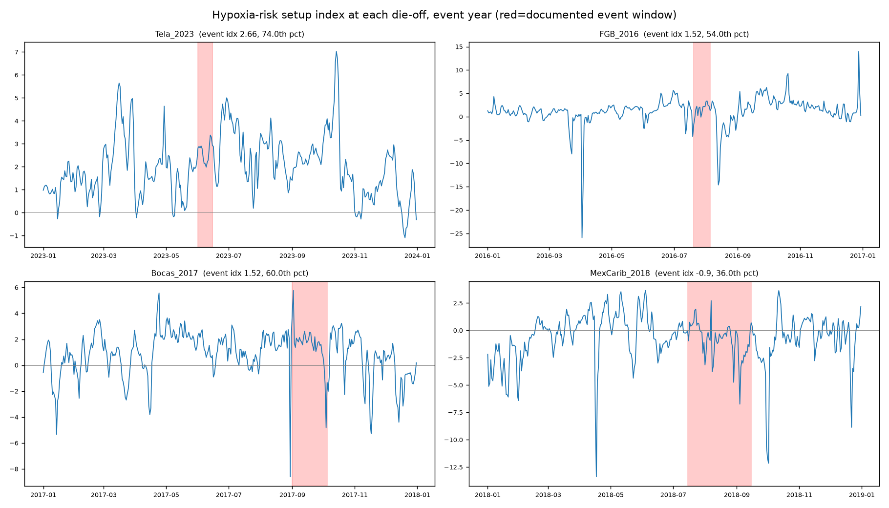

Full documentation of the datasets, analysis pipeline, and statistics behind the Rebel Reef investigation, written so an independent scientist can review, reproduce, or extend it, and so the work can move toward peer-reviewed publication. This is a pre-expedition, satellite-and-reanalysis study; every claim is stated with its resolution limits and confidence. In-situ validation is the explicit next step (see Open Questions).
Banco Capiro / Cocalito ("Rebel Reef"), Tela Bay, Honduras (~15.90 °N, 87.48 °W), a turbid, nutrient-loaded nearshore bank reef ~10 km from the Ulúa River mouth. It held anomalously high hard-coral cover (60-70%) through the 2010s despite lethal heat, then suffered mass mortality in 2023. Comparison reefs: Cocalito (15.94 N, 87.55 W), Utila (16.10 N, 86.92 W), Roatán (16.32 N, 86.53 W), Cayos Cochinos (15.98 N, 86.47 W), and Florida Keys (24.66 N, 81.05 W) as a heat-comparison/dead-reef control.
All open / free unless noted. Access is programmatic (ERDDAP, Copernicus Marine Toolbox, Google Earth Engine, NASA POWER, PANGAEA).
| Variable | Product | Resolution | Record | Access |
|---|---|---|---|---|
| SST & Degree Heating Weeks | NOAA Coral Reef Watch 5 km (CoralTemp) | 5 km, daily | 1985-2026 | PacIOOS ERDDAP |
| Turbidity (Kd490) & chlorophyll | ESA OC-CCI v6 | 4 km, daily & monthly | 1997-2025 | PML/NOAA COMET ERDDAP |
| Reef-scale chlorophyll | Sentinel-3 OLCI (Copernicus Marine) | 300 m, daily | 2016-2025 | copernicusmarine |
| Dissolved O₂, nitrate, phosphate, silicate, NPP | Copernicus Marine BGC reanalysis (PISCES) | 0.25° (~27 km), daily | 1993-2025 | copernicusmarine |
| Salinity, temperature, mixed-layer depth | GLORYS12 physical reanalysis | 1/12° (~9 km), daily | 1993-2024 | copernicusmarine |
| Rainfall, wind, air temp | NASA POWER; CHIRPS; GPM IMERG; ERA5 | point / 0.05° / 0.1° / 0.25° | 1981/1997/2000/1940- | POWER API; Earth Engine |
| High-res imagery (turbidity, SAR) | Sentinel-2 MSI (10 m); Sentinel-1 SAR (10 m); Landsat 8/9 (30 m + 100 m thermal); MODIS/VIIRS | 10-500 m | 2015/2014/1984/2000- | Google Earth Engine |
| Currents (plume model) | GLORYS12 + OceanParcels Lagrangian | 1/12°, daily | 2019-2023 | copernicusmarine / Parcels |
| Carbonate system | PyCO2SYS mixing model | n/a | n/a | open-source |
First-principles mechanism tests, each isolating one hypothesis, plus an integrative index and a cross-site comparison. All code is Python (xarray, pandas, PyCO2SYS, OceanParcels, earthengine-api).
| Step | What it does |
|---|---|
| Thermal stress | 40-yr CoralTemp SST → Maximum Monthly Mean, seasonal range, Degree Heating Weeks for 6 sites. Result: no cool refuge (§2). |
| Ocean color | OC-CCI + Sentinel-3 Kd490/chlorophyll climatology & anomalies; reef-scale plume characterization. |
| Light × heat | Beer-Lambert light-at-depth from measured Kd490, combined with DHW into a depth-resolved bleaching-risk index. |
| Hydrodynamics | GLORYS12 + OceanParcels: sediment-plume residence time; subsurface temperature & Ekman pumping (upwelling test). |
| Carbonate | PyCO2SYS seawater-river mixing → aragonite saturation vs river alkalinity endmember. |
| Master time series | Per-site daily merge of all variables 1990-2026 + day-of-year climatology + z-anomaly; whole-record anomaly detection. |
| Freshwater-lens test | GLORYS salinity + mixed-layer depth + SST around the June-2023 event vs baseline (stratification signature). |
| First-flush test | Antecedent-dryness (prior-90-day rain percentile, dry-spell length) of each event's storm, local point vs basin. |
| Setup index | Composite hypoxia-risk index = warm(SST z) + stratified(−mixed-layer z) + calm(−wind z), daily across 2023 & at analog sites. |
| Dry-season-break catalog | All 1990-2024 dry-season-break storms at Tela (3-day pulse ≥45 mm, dry pre-onset antecedent), each profiled for O₂/stratification/turbidity response, ranked by hypoxia-risk. |
| Cross-site parallels | Same signature at documented hypoxia die-offs: East Flower Garden Bank 2016, Bocas del Toro 2017, Mexican Caribbean 2018. |
| Adversarial review | Hostile internal red-team of the herbivory model; a 2×2 factorial + Monte Carlo replaced the discarded "same heat, opposite fate" claim. |
Anomalies are z-scores against a day-of-year climatology (mean and SD by calendar day, baseline years excluding the event year). The setup index sums the standardized warm, stratified, and calm components. The dry-season-break catalog ranks events by a composite of standardized drought, pulse, warmth, calmness, and stratification. Antecedent dryness is the percentile of the 83-day pre-onset rainfall (ending 7 days before the storm, so a multi-day storm's own rain does not inflate its antecedent) against the same-day-of-year climatology. The herbivory model is a Mumby-type coral/macroalgae/turf bistability model, calibrated (not independently validated) to the 2014-2022 record, with a controlled 2×2 factorial and Monte Carlo over uncertain parameters.
Full narrative in The Science. Selected quantitative results:
Multi-decade, multi-variable record (6 sites, 1990-2026). Daily SST/DHW, turbidity, chlorophyll, dissolved O₂, nutrients, rainfall and wind, merged per site with full-record anomaly detection.


The June-2023 event window. Heat rising, turbidity/chlorophyll cloud-limited, and (from the reanalysis) a warm, stratified water column at the die-off onset.


High-resolution imagery could not resolve the event. Sentinel-1 SAR (10 m, cloud-penetrating) shows uniform bay water on June 7, no discrete slick or plume, ruling out a large surface signature and confirming the event was subsurface / sub-grid.

Dry-season-break storm catalog (1990-2024). Only 10 such storms in 34 years; June 2023 ranks #2 by hypoxia-risk composite, and March 2024 ranks #1 (an even more extreme, and recent, setup, a natural experiment worth checking, see Open Questions). O₂ dips after the storm only when it lands on warm, stratified water.


Cross-site parallels. The same setup index at three documented hypoxia die-offs. None occurred at its year's setup peak (all 36th-74th percentile), the die-offs are acute, locally triggered events, and the confirmed freshwater-lens cases (Flower Garden Bank, Bocas del Toro) carry a salinity-drop fingerprint that Tela (a thinner, sub-grid lens) does not resolve.

Analysis code (Python) is in the public repository github.com/steps-re/rebel-reef, including the adversarial review (ADVERSARIAL_REVIEW.md). Derived datasets (the per-site daily master time series, the dry-season-break catalog, and event-signature tables) are available on request. All source datasets are public via the providers listed in §2. This is a pre-expedition modeling draft (v1), not peer-reviewed; we welcome review, correction, and collaboration, see Open Questions and Data & Researchers.
Suggested framing for a manuscript: an integrated multi-driver attribution for Banco Capiro (optics + thermal + hydrodynamics + carbonate + herbivory), the physical ruling-out of cooler-water / diverted- plume / upwelling escapes, and a predictive vulnerability framework, plus the novel dry-season-break / first-flush hypoxia hypothesis for the June-2023 event. Co-authors who hold the long-term field data (Operation Wallacea), the symbiont work, and the in-situ observations would be essential.